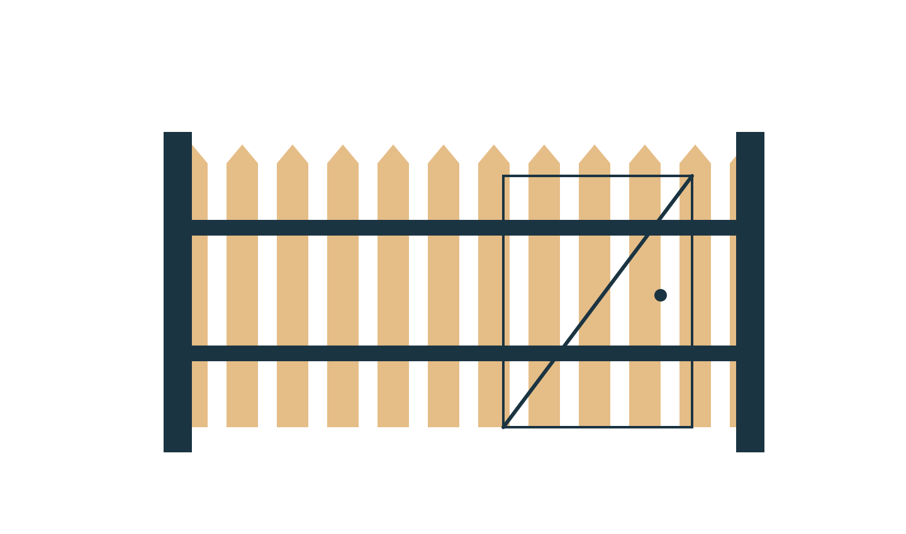
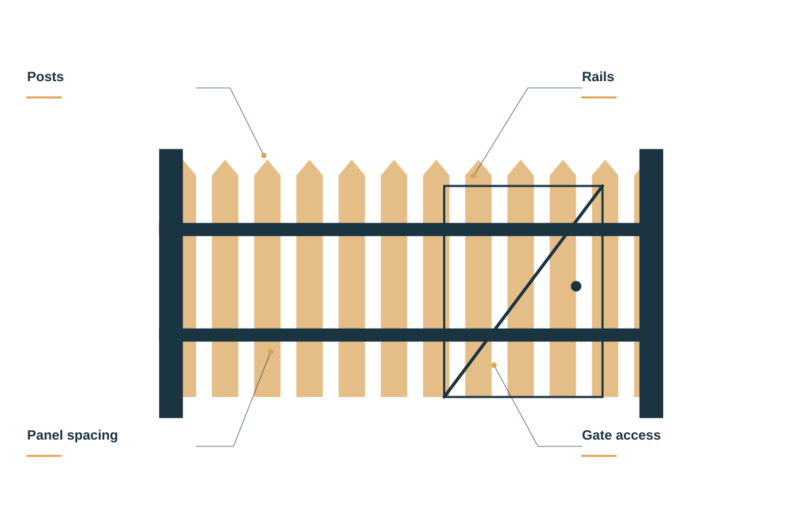
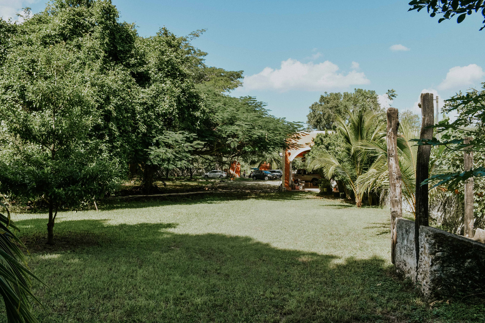

Wood fencing
Natural character, considered proportions, and a style that belongs.

Fences and gates that bring the whole property together. Thoughtful lines, useful spaces, and materials with character.
Plan your fence ↗Privacy, access, natural texture, or a new boundary. Start with the way you want the space to work.
Natural character, considered proportions, and a style that belongs.
Make a little more room for your own kind of outside.
A practical opening that finishes the line beautifully.
Discuss the sections, posts, and hardware that need attention.
A fence brings together posts, rails, panels, openings, and the way the ground moves. A good plan considers the whole boundary, not just a material sample.

CEDARLINE FENCE / THE DETAILS MATTERDiscuss the wood and finish direction you like, with the wider property in mind.
Height, spacing, and the view from both sides help shape the design conversation.
Plan gates around the way people, pets, and equipment move through the space.
We begin with the grade, the boundaries, the openings, and the view from both sides. Then we discuss materials and a scope around your property.

Start with the property, your priorities, and the details you want us to understand.
Talk through suitable options, practical access, and the work you want included.
Review the proposed scope and ask questions before deciding on the next step.
When you get in touch, a little context goes a long way. These are the details that help us start a useful conversation about your fences & gates project.
Tell us what you have in mind ↗Tell us about the boundary line so the conversation starts with your situation.
A few details about privacy and style help us understand what you need.
Share gates and access when you get in touch, including photos where useful.
Let us know about site and existing fence so the proposed scope reflects your priorities.
Send a few photos and tell us what you want to repair or extend. We can discuss materials, condition, and the scope.
Yes. Tell us about the opening, the way you will use it, and the access you need.
The fence line, grade, material, height, and openings all help define the proposed work.
Fences and gates that bring the whole property together. Thoughtful lines, useful spaces, and materials with character.